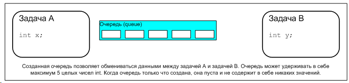
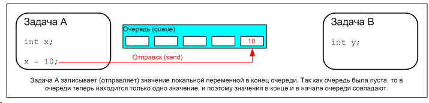
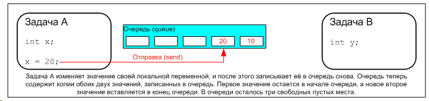
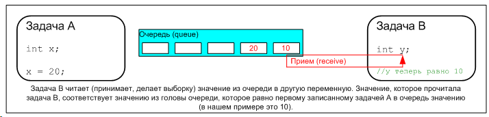
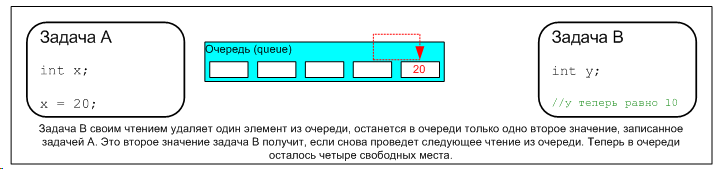

|
FreeRTOS: практическое применение, часть 2 (управление очередями) |
· Как создавать очередь.
· Как очередь управляет данными, которые в ней содержатся.
· Как данные посылаются (помещаются) в очередь.
· Как данные принимают (получают) из очереди.
· Что такое блокировка на очереди.
· Какой эффект оказывают приоритеты задачи при записи в очередь и чтении из очереди.
2.2. Характеристики очереди
Хранилище данных (Data Storage)
Очередь может хранить в себе конечное количество элементов данных фиксированного размера. Максимальное количество элементов, которое может хранить очередь, называют длиной (length) очереди. При создании очереди указывают совместно длину очереди и размер каждого элемента данных.
Обычно очереди работают как буфер по принципу 'первый вошел - первый вышел' (FIFO, First In First Out), где данные записываются в конец (в хвост) очереди, а считываются и удаляются из начала (из головы) очереди. Также можно записывать данные и в начало очереди.
Запись в буфер вызывает побайтовое копирование данных, которые должны быть сохранены в самой очереди. Чтение данных из очереди вызывает также копирование данных из очереди, при этом данные из очереди удаляются. На рисунке 19 показана запись данных в очередь и чтение данных из очереди, и эффект сохранения данных в очереди для каждой операции.





Рис. 19. Пример последовательности записи в очередь и чтения из очереди
Доступ к очереди для нескольких задач
Очереди являются объектами со своими собственными правами, которыми не владеют любые отдельные задачи, и эти права не могут быть установлены никакими задачами. Любое количество задач может записывать данные в одну и ту же очередь, и любое количество задач может читать данные из одной и той же очереди. Ситуация, когда в одну очередь пишут данные несколько задач вполне обычна. Однако очень редко бывает, что из одной очереди читают данные несколько задач.
Блокировка на чтение очереди
Когда задача делает попытку чтения из очереди, она (задача) может указать опционально время блокировки. Это время, в течение которого задача должна находиться в состоянии Blocked при ожидании появления данных в очереди, если пока очередь пуста. Задача, ожидающая появления данных в очереди, немедленно переходит из состояния Blocked в состояние Ready, когда другая задача или прерывание помещает данные в очередь. Также задача автоматически переходит из состояния Blocked в состояние Ready, если истекло время блокировки, а данные в очереди к этому моменту так и не появились.
Очереди могут иметь несколько читающих задач, так что возможна ситуация, когда на одной очереди имеется более одной задачи, ожидающей появления данных в режиме Blocked. В этом случае только одна задача будет разблокирована, когда данные наконец поступят. Эта разблокированная задача будет иметь наивысший приоритет из всех задач, ожидающих данные. Если блокированные (ожидающие данные) задачи имеют одинаковый приоритет, то будет разблокирована задача, которая дольше всех ждет данные.
Блокировка на записи очереди
Точно так же, как и при чтении из очереди, задача может указать (что также необязательно) время блокировки для записи в очередь. В этом случае это время блокировки соответствует максимальному времени, в котором задача должна удерживаться в состоянии Blocked при ожидании появления свободного места в очереди, если очередь уже полностью заполнена.
У очередей может быть несколько записывающих в них задач, с возможной блокировкой более чем одной задачи на ожидании завершения операции записи. В этом случае только одна задача будет разблокирована, когда появится свободное место в очереди. Задача, которая при этом разблокируется, будет иметь самый высокий приоритет среди всех задач, ожидающих появления свободного места. Если заблокированные задачи имеют равный приоритет, то разблокируется та задача, которая дольше всех задач ждет разблокировки.
2.3. Использование очереди
API функция xQueueCreate()
Очередь перед использованием должна быть явно создана.
Обращение к очереди происходит через переменную типа xQueueHandle. Функция xQueueCreate() используется для создания очереди и возвращает xQueueHandle в качестве ссылки на созданную очередь.
Для создания очереди FreeRTOS выделяет память RAM из кучи (heap). RAM используется как для структур данных очереди, так и для элементов, которые будут помещены в очередь или считаны из неё. В случае нехватки памяти в heap RAM функция xQueueCreate() при попытке создания очереди вернет NULL. Часть 5 более подробно рассматривает управление памятью heap.
Прототип API функции xQueueCreate():
xQueueHandle xQueueCreate( unsigned portBASE_TYPE uxQueueLength,
unsigned portBASE_TYPE uxItemSize);
Параметры и значение возврата функции xQueueCreate():
|
Имя параметра |
Описание |
|
uxQueueLength |
Максимальное количество элементов, которое можно сохранить в очереди в любой момент времени. |
|
uxItemSize |
Размер в байтах каждого элемента данных, который можно сохранить в очереди. |
|
возвращаемое значение |
Если функция вернула не NULL, то значит очередь создана успешно. Возвращенная величина в этом случае должна быть сохранена как хендл к созданной очереди. |
API функции xQueueSendToBack() и xQueueSendToFront()
Как и можно ожидать, xQueueSendToBack() используется для отправки данных в конец (хвост) очереди, а xQueueSendToFront() используется для отправки данных в начало (голову) очереди.
Функция xQueueSend() эквивалентна и полностью та же самая, что и xQueueSendToBack().
Никогда не делайте вызов xQueueSendToFront() или xQueueSendToBack() из процедуры обработчика прерывания (ISR, Interrupt Service Routine). Вместо этого должны использоваться защищенные версии xQueueSendToFrontFromISR() и xQueueSendToBackFromISR(). Они описаны в части 3.
Прототип API функции xQueueSendToFront():
portBASE_TYPE xQueueSendToFront( xQueueHandle xQueue,
const void * pvItemToQueue,
portTickType xTicksToWait );
Прототип API функции xQueueSendToBack():
portBASE_TYPE xQueueSendToBack( xQueueHandle xQueue,
const void * pvItemToQueue,
portTickType xTicksToWait );
Параметры и значение возврата функций xQueueSendToFront() и xQueueSendToBack().
|
Имя параметра |
Описание |
|
xQueue |
Хендл очереди, в которую данные посылаются (записываются). Хендл очереди берут из значения, которое вернула функция xQueueCreate() при создании очереди. |
|
pvItemToQueue |
Указатель на данные, которые копируются в очередь. |
|
xTicksToWait |
Максимальное количество времени, в течение которого задача должна оставаться в состоянии Blocked в ожидании, пока не появится в очереди свободное место для записи (если очередь уже заполнена). Обе функции и xQueueSendToFront(), и xQueueSendToBack() сделают возврат немедленно, если xTicksToWait указан 0 и если очередь уже заполнена. Время блокировки указывается в периодах тика, поэтому абсолютное время ожидания зависит от частоты следования тиков. Для преобразования времени в миллисекундах во время в тиках может использоваться константа portTICK_RATE_MS. Установка xTicksToWait в значение portMAX_DELAY приведет к тому, что задача будет ждать бесконечно (таймаута разблокировки не будет), что обеспечивается установкой в 1 значения INCLUDE_vTaskSuspend в файле FreeRTOSConfig.h. |
|
возвращаемое значение |
Возможны две величины возврата: 1. pdPASS - вернется только тогда, когда данные успешно отправлены в очередь. Если указано время блокировки (xTicksToWait было не равным 0), то возможно что вызвавшая функцию задача помещается в состояние Blocked для ожидания появления свободного места в очереди. В этом случае значение pdPASS будет возвращено, если в очереди появилось свободное место до истечения времени блокировки. 2. errQUEUE_FULL - будет возвращено, если данные не были записаны в очередь, так как очередь уже полностью заполнена. Если указано время блокировки (xTicksToWait было не равным 0), то вызвавшая функцию задача была помещена в состояние Blocked для ожидания, пока другая задача или обработчик прерывания освободят место в очереди, но указанное время блокировки истекло, а свободное место в очереди так и не появилось. |
API функции xQueueReceive() и xQueuePeek()
Функция xQueueReceive() используется для приема (чтения) элемента из очереди. При этом принятый элемент удаляется из очереди.
Функция xQueuePeek() используется для приема элемента из очереди без удаления элемента из очереди. Функция xQueuePeek() читает элемент из головы очереди без модификации данных, которые сохранены в очереди или, другими словами, без модификации порядка сохраненных данных в очереди (состояние очереди остается неизменным).
Никогда не делайте вызов xQueueReceive() или xQueuePeek() из процедуры обработчика прерывания (ISR, Interrupt Service Routine). Защищенная версия xQueueReceiveFromISR() описана в части 3.
Прототипы API функций xQueueReceive() и xQueuePeek():
portBASE_TYPE xQueueReceive( xQueueHandle xQueue,
const void * pvBuffer,
portTickType xTicksToWait );
portBASE_TYPE xQueuePeek ( xQueueHandle xQueue,
const void * pvBuffer,
portTickType xTicksToWait );
Параметры и значение возврата функций xQueueReceive() и xQueuePeek():
|
Имя параметра |
Описание |
|
xQueue |
Хендл очереди, из которой данные принимаются (читаются). Хендл очереди берут из значения, которое вернула функция xQueueCreate() при создании очереди. |
|
pvBuffer |
Указатель на память, куда будут копироваться принятые из очереди данные. Размер каждого элемента данных (в байтах), которые хранит очередь, устанавливается при создании очереди. Память, на которую указывает pvBuffer, должна быть в байтах объемом не меньше размера одного элемента данных. |
|
xTicksToWait |
Максимальное количество времени, в течение которого задача должна оставаться в состоянии Blocked в ожидании, пока не появится в очереди доступный для чтения элемент данных (если очередь уже пуста). Обе функции и xQueueReceive(), и xQueuePeek() сделают возврат немедленно, если xTicksToWait указан 0 и если очередь уже пуста. Время блокировки указывается в периодах тика, поэтому абсолютное время ожидания зависит от частоты следования тиков. Для преобразования времени в миллисекундах во время в тиках может использоваться константа portTICK_RATE_MS. Установка xTicksToWait в значение portMAX_DELAY приведет к тому, что задача будет ждать бесконечно (таймаута разблокировки не будет), что обеспечивается установкой в 1 значения INCLUDE_vTaskSuspend в файле FreeRTOSConfig.h. |
|
возвращаемое значение |
Возможны две величины возврата: 1. pdPASS - вернется только тогда, когда данные успешно прочитаны из очереди. Если указано время блокировки (xTicksToWait было не равным 0), то возможно что вызвавшая функцию задача помещается в состояние Blocked для ожидания появления доступного элемента данных в очереди. В этом случае значение pdPASS будет возвращено, если в очереди появился элемент до истечения времени блокировки. 2. errQUEUE_EMPTY - будет возвращено, если данные не были прочитаны из очереди, так как очередь уже пуста. Если указано время блокировки (xTicksToWait было не равным 0), то вызвавшая функцию задача была помещена в состояние Blocked для ожидания, пока другая задача или обработчик прерывания не запишут что-нибудь в очередь, но указанное время блокировки истекло, а доступный для чтения элемент в очереди так и не появился. |
.
unsigned portBASE_TYPE uxQueueMessagesWaiting( xQueueHandle xQueue );
|
Имя параметра |
Описание |
|
xQueue |
Хендл очереди, которая опрашивается. Хендл очереди берут из значения, которое вернула функция xQueueCreate() при создании очереди. |
|
возвращаемое значение |
Количество элементов, которые сейчас находятся на хранении в очереди. Если функция вернула 0, то очередь пуста. |
1231